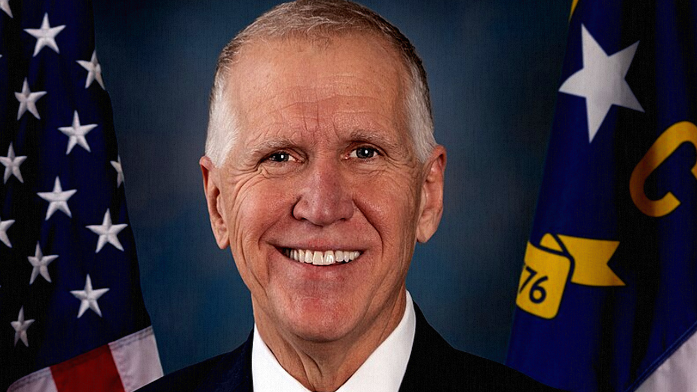

North Carolina Senator Breaks Ranks
Published on June 28, 2025 Provided via Fox News.

Thom Tills in 2022, Provided by Libary of Congress
A swing state republican Senator Thom Tillis told that he wouldn't support the measure in the BBB because of it's Medicaid cuts.
As Tillis runs for reelection in the 2026 midterms, he can't support the law.
He is expected to be one of three senators to oppose the BBB with Sen. Ron Johnson of Wisconsin and Sen. Rand Paul of Kentucky.